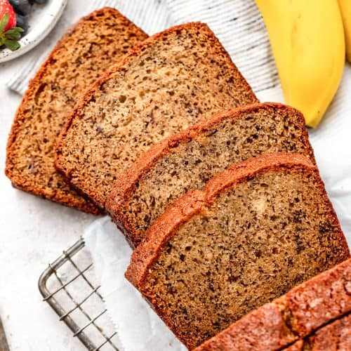

How to Make the Best Banana Bread

Thousands of people make this recipe every day. Why? Because it really is the best banana bread
recipe, period. You can mix everything in one bowl, you can vary the amount of sugar or bananas.
And the secret to its great flavor? Melted butter. The beauty of this banana bread recipe is you
don't need a fancy mixer! A mixing bowl, a fork to whisk the eggs, and a sturdy spoon to mix the
batter are all you need. The sugar amount is flexible. You can toss in a cup of chopped nuts, raisins,
or chocolate chips if you want!
Ingredients
- 3 medium (7" to 7-7/8" long) very ripe bananas, peeled
- 1/3 cup (76g) butter, unsalted melted
- 1/2 teaspoon baking soda
- 1 pinch of salt
- 3/4 cup (150g) sugar
- 1 large egg, beaten
- 1 teaspoon vanilla extract
- 1 1/2 cups (205g) all-purpose flour
Instructions
- Preheat the oven to 350°F (175°C) and butter an 8x4-inch loaf pan.
- In a mixing bowl, mash the ripe bananas with a fork until completely smooth.
- Stir the melted butter into the mashed bananas.
- Mix in the baking soda and salt.
- Stir in the sugar, beaten egg, and vanilla extract.
- Mix in the flour.
- Pour the batter into your prepared loaf pan and bake for 55 - 65 minutes.
- Remove from oven and let cool in the pan for a few minutes. Then remove the banana bread from the pan and let cool completely before serving. Slice and serve.